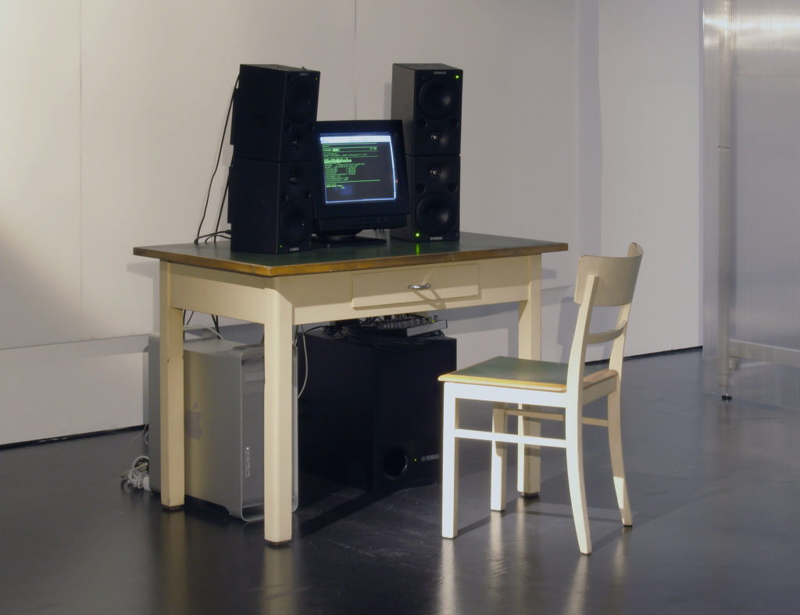

REFLECTION

I found this project interesting because of its usage of hardware and software. The artists used software to display the lung capacity of a slave worker but also used speakers to turn that into a "breath of air," allowing audience to get a tangible experience.
Implementation
"In the original site-specific iteration, the sound was played at a specifically calculated high volume that would displace air equivalent to the victim’s calculated last breath. A a seated viewer would have the sensation of air being breathed onto their face with each sound."